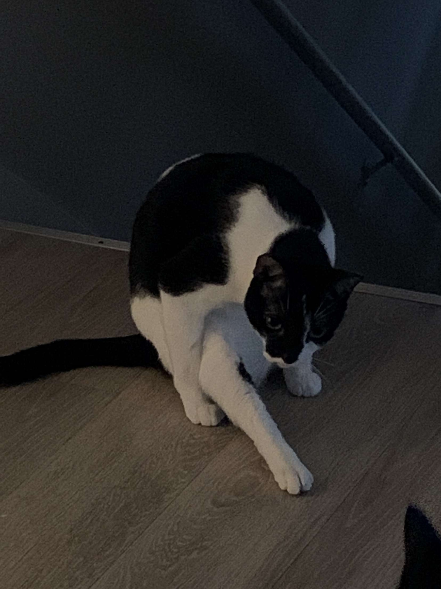

About Percy
Here's some facts about Percy.
Percy is 4 almost 5 years old.
His name was Sheldon when we adopted him.
I named him after the Percy Jackson book series.
Percy is 4 almost 5 years old.
His name was Sheldon when we adopted him.
I named him after the Percy Jackson book series.